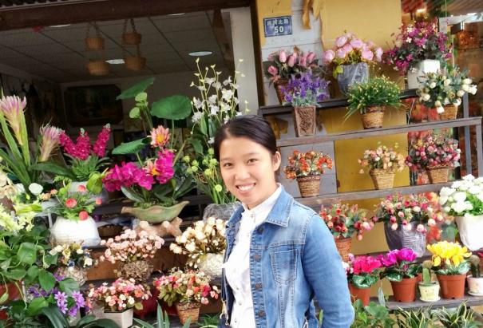

<柴林香

个人简介：
项目中职责：
云南大理人，目前就读于西南科技大学，计算机科学与技术学院软件工程专业研二学生，于2016年7月毕业。
中间件web端设计、实现、测试。
博客地址：邮箱：1107422758@qq.com
技能：熟悉HTML、CSS、JavaScript，了解Java、C，对HTML5有浓厚兴趣。
特长：什么都喜欢一点！
座右铭：天生我材必有用！
所获荣誉：•2013-2014年 西南科技大学 先进个人奖
•2013年8月 中国服务外包创新创业大赛 三等奖
•2012-2013年 西南科技大学 计算机科学与技术学院 三好学生